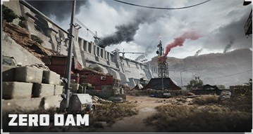

// 01 Giao tranh theo đội
Warfare
Cùng đồng đội tiến công hoặc giữ vững các cứ điểm. Chiến Trường có những mục tiêu Công và Thủ, Chiếm Đóng cùng các bản đồ rộng lớn.
- Mục tiêu
- Chiếm hoặc bảo vệ cứ điểm
- Điểm nổi bật
- Phối hợp đội hình trên chiến trường
Ba cách nhập cuộc, ba nhịp chiến đấu khác nhau. Chọn chế độ phù hợp với cách bạn muốn phối hợp, khám phá và hoàn thành nhiệm vụ.
// 01 Giao tranh theo đội
Cùng đồng đội tiến công hoặc giữ vững các cứ điểm. Chiến Trường có những mục tiêu Công và Thủ, Chiếm Đóng cùng các bản đồ rộng lớn.

// 02 Thu thập và rút lui
Chuẩn bị trang bị, tiến vào khu vực tác chiến và tìm vật phẩm giá trị. Bạn cần hoàn thành mục tiêu rồi rút quân an toàn, trong khi dè chừng cả lực lượng AI lẫn những đội chơi khác.

// 03 Chiến dịch cốt truyện
Bước vào chuỗi nhiệm vụ góc nhìn thứ nhất giữa những con phố Mogadishu. Chiến dịch tập trung vào bối cảnh, diễn biến nhiệm vụ và phối hợp tác chiến.